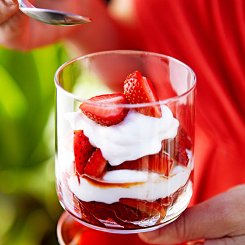

Strawberry Parfait

Description
Quick and simple parfait made of fresh strawberries with cream and sugar for creaminess and sweetness.
recipe from sunset
Ingredients
- 3 pts. strawberries, plus 3 halved berries for garnish
- 2 tablespoons packed light brown sugar
- 1 teaspoon lemon zest, divided
- 1 cup heavy whipping cream
- 3 tablespoons powdered sugar
- 1 cup plain low-fat Greek-style yogurt
Procedure
- Slice tops off 3 parts strawberries and cut lengthwise into wedges. Toss with brown sugar and 1/2 tsp
lemon zest in a medium bowl. Let sit at room temperature until juicy, about 20 minutes, or chill 2 hours
- Meanwhile, whisk cream and powdered sugar in a bowl until stiff peaks form.
Fold in remaining 1/2 tsp. zest and the yogurt. Cover and chill until used, up to 2 hours.
- Divide half of strawberry mixture among 6 parfait glasses. Top with half of cream mixture, dividing equally.
Repeat layering and garnish with strawberry halves.
back to main page